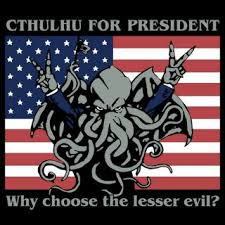
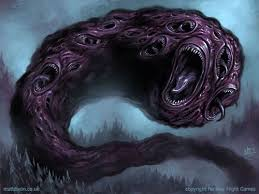
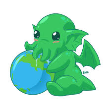

The goal of the Eldritch project is to delve into three works of Lovecraft: “The Call of Cthulhu,” “The Shadow Over Innsmouth,” and “At the Mountains of Madness.” These pieces are exemplary of Lovecraft’s style: verbose prose with an affinity for extravagant descriptions. We have isolated these words and researched their meanings and their usages over time and how it changed.
About Us!

Matthew Burch is a 2018 graduate of the University of Pittsburgh at Greensburg with bachelors’ degrees in English Literature and Professional Writing. He also obtained a minor in Theater, as well a Digital Studies Certificate. Matt’s contribution to the project consisted of text encoding, XSLT transformation, and natural language processing using python scripts.

Pat Herron is a 2017 graduate from the University of Pittsburgh at Greensburg with a bachelor’s in English Literature. Pat wrote markup for the texts and added analysis to the project, along with supplementary investigation into the research thesis.

Evan Tatarka is a 2018 graduate of the University of Pittsburgh at Greensburg with a bachelor’s in Information Technology. Evan wrote code for HTML, CSS, and added some complimentary aesthetics; sounds as well as imagery.
Methodology
We worked with three stories form the Lovecraft library, all of which are a part of the Cthulhu mythos. The purpose of this project was to isolate the words we found that elicited a feeling of either confusion, ambiguity, or dread. With our research, we initially sought out words that are either archaic or obsolete within the modern English vocabulary. Our researched yielded little in this regard. The set of words we isolated carried either a gothic, religious, or scientific connotation; the latter category drawing the most words. Once we tagged exotic words in our TEI files, we delved into python and XSLT in order to create a word list in a separate file.
This file was edited, and the select words had attributes of either gothic, religious, scientific, or other added to their tags. Our word selection and how we coded the associated markup was highly subjective. The three of us applied different reasoning to our respective working-texts. The attributes were all done by one coder and as a result, the subjectivity was extended. The result of the word analysis was that the words yielded a closer relationship to religious and scientific inferences than archaic references. In the end, the linguistic yield was vastly different than what was sought after.